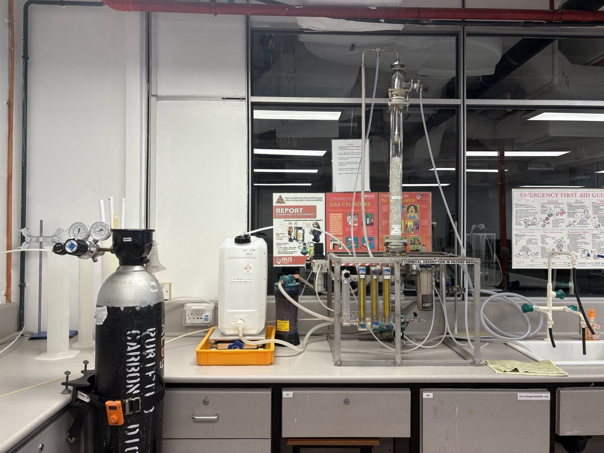
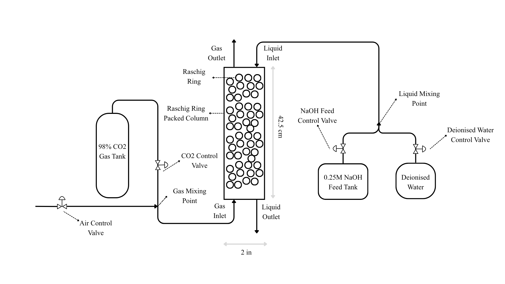
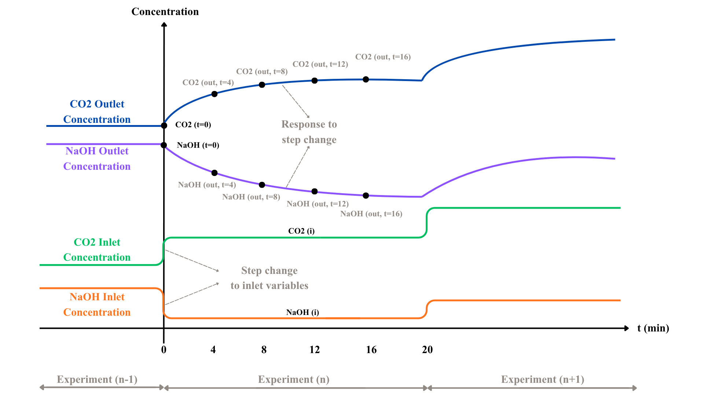

Experimental Set-up & Sampling
Unlike many existing studies that rely on simulated data, this study utilises experimentally obtained data. An experimental setup was constructed to replicate the key features of an industrial chemisorption column at a laboratory scale. The experiments were conducted in a vertical packed column with a total height of 42.5 cm and an internal diameter of 2 in. The column was packed with Raschig rings having an inner diameter of 6 mm, an outer diameter of 8 mm, and a length of 9 mm. NaOH liquid stream was introduced at the top of the column, while the CO2 gas stream was fed from the bottom. The actual experimental setup is shown in Figure 3.1. Additionally, a labelled schematic of the setup and the range of operating parameters are presented in Figure 3.2 and Table 3.1 respectively.


Prior to each experimental run, the system was operated for 20 min under fixed inlet conditions of CO2 gas and NaOH liquid to achieve steady state, consistent with preliminary trials indicating stabilisation within 16-20 mins. The outlet concentration of CO2 and NaOH were then measured, denoted as CO2 (t=0) and NaOH (t=0), representing the initial conditions.
A disturbance was subsequently introduced by instantaneously varying the inlet flow rates of the CO2 gas and NaOH liquid streams. Flow rate was treated as the manipulated variable, directly influencing the inlet composition and, consequently the outlet concentration, as described in Equation 1. The varied flow rates of CO2 and NaOH were denoted as CO2 (i), NaOH (i). Collectively, these define a four-dimensional multivariate input set of CO2 (t=0), NaOH (t=0), CO2 (i), NaOH (i).
Equation 1
Following an instantaneous change in inlet concentration, the outlet concentrations of CO2 and NaOH exhibits dynamic temporal behaviour. The changes outlet concentrations were then measured at 4-min^1 intervals from 4 to 16 min denoted as CO2 (out) and NaOH (out), yielding eight data points across four time steps, 4 each for CO2 and NaOH.
CO2 concentration was analysed using an Agilent Technologies 7890B gas chromatography system equipped with a thermal conductivity detector, while NaOH concentration was determined using a manual titrator with indicators Phenolphthalein and Methyl Orange. The gas and liquid inlet flow rates were maintained constant at 2.20 L min-1 and 0.70 L min-1, respectively, with air and deionised water used as diluents to achieve the desired inlet compositions. All NaOH and CO2 concentrations were sampled in triplicates to ensure reproducibility. Figure 3.3 illustrates the expected system dynamics based on the experimental methodology. The full experimental methodology is detailed in Appendix B.

| Parameters | Value Ranges | Unit |
|---|---|---|
| NaOH Flowrate | 0-0.3 | L/min |
| CO2 Flowrate | 0-0.2 | L/min |
The operating ranges for CO2 AND NaOH flow rates that control the inputs CO2 (i), NaOH (i) were selected based on the physical constraints of the experimental setup and to ensure representative coverage of the different zones (SRZ, IRZ, PAZ) described in Section 2.2.1. Flow rates beyond this range were avoided, as they would result in the dominance of specific zones, leading to poor representation of overall system behaviour.
A total of 30^2 data points were collected with inputs generated from Latin Hypercube Sampling (LHC). LHC is a stratified sampling method that partitions each of the d = 2 dimensions of the parameter space Dk, into N = 30 non-overlapping subsets, {Dk,j} j ∊ [1,...,N], each with an equal probability of 1/N and hence enhances uniformity of sample coverage. Compared with simple random sampling, LHC provides greater coverage of the sample space without the formation of clusters. This is quantified by the method's Centered Discrepancy (CD), wherein a lower value indicates a better uniformity29: LHC achieved a CD of 0.00135 while random only achieved 0.00623. The difference in performance is also reflected in Figure 3.4, where random sampling exhibits noticeable clustering. Therefore, LHC is a more suitable sampling method to collect data that is representative of the full operating conditions rather than an unintentionally biased subset.